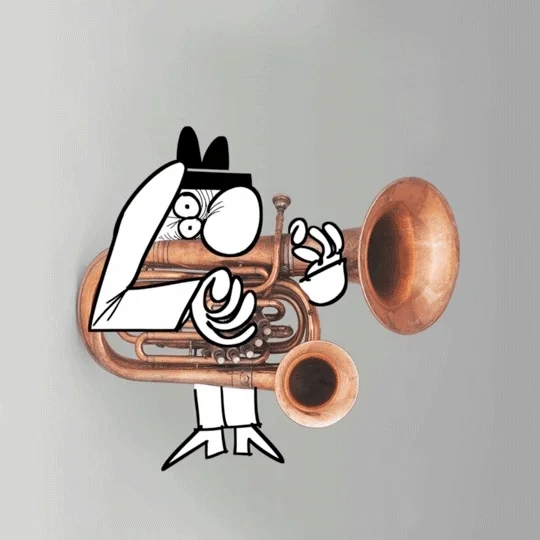

INPROGRESSION
INPROGRESSION: Musical and Visual Art
INPROGRESSION is a musical group known for their unique blend of organic rock with a myriad of influences, including blues, funk, hip-hop, and punk. Their music is characterized by experimental sounds, intriguing themes, and thought-provoking lyrics often conveyed through visually compelling performances and artwork. All Create a unique fusion of auditory and visual creativity. Here’s a detailed description of INPROGRESSION’s musical and visual art:
Key Characteristics of INPROGRESSION’s Art:
1. Musical Influence:
• Diverse Genres: INPROGRESSION’s music is deeply influenced by various musical genres such as blues, funk, hip-hop, and punk. This eclectic mix creates a rich tapestry of sounds and themes that are reflected in their performances and visual presentations.
• Rhythmic and Dynamic: Their music often mirrors the rhythm and dynamism of these genres. This can be seen in their energetic performances, flowing lines, bold stage setups, and vibrant compositions that convey a sense of movement and energy.
2. Experimental Sounds and Visuals:
• Innovative Techniques: INPROGRESSION employs innovative techniques in their music production and performances. This can include mixed media, digital manipulation, and unconventional instruments or sounds that add unique textures and depth to their music.
• Abstract and Avant-Garde: Their visuals are often abstract and avant-garde, pushing the boundaries of traditional music videos and stage designs. This experimental approach results in performances that are both visually striking and intellectually stimulating.
3. Intriguing Themes:
• Social and Cultural Commentary: The themes in INPROGRESSION’s music frequently address social and cultural issues. Their songs can include commentary on contemporary life, societal norms, and cultural identities, encouraging listeners to reflect on these topics.
• Personal Expression: There is a strong element of personal expression in their music. The lyrics and compositions often feel introspective, exploring themes of identity, emotion, and personal experiences, making their work deeply resonant with audiences.
4. Thought-Provoking Lyrics:
• Incorporation of Text: INPROGRESSION’s music often includes lyrical elements that are poetic and thought-provoking. These lyrics add an additional layer of meaning to their music, enhancing the overall impact of each song.
• Narrative Quality: The lyrics and textual elements help to create a narrative quality within their music. Each song tells a story or conveys a message, inviting listeners to engage with the music on a deeper level.
5. Visual and Emotional Impact:
• Bold and Vibrant: The use of bold sounds and vibrant compositions makes INPROGRESSION’s music visually and audibly arresting. Their performances and music videos are designed to capture the audience’s attention and draw them into the intricate details and themes.
• Emotional Depth: Beyond the visual and auditory appeal, their music also has significant emotional depth. The combination of personal expression, social commentary, and thought-provoking lyrics creates a powerful emotional resonance.
Conclusion:
INPROGRESSION’s music at Artabillies.com is a compelling fusion of auditory and visual creativity. Their work, characterized by diverse musical influences, experimental techniques, and thought-provoking themes, offers a unique and engaging artistic experience. The bold visuals, combined with lyrical and narrative elements, create a rich tapestry that invites listeners to explore and reflect. Through their music, INPROGRESSION successfully blurs the lines between different genres, creating a dynamic and impactful body of work that resonates on multiple levels.
More Artabillies Info
Album: Time & Energy
Art Description: The cover features an abstract clock with scattered numbers and dynamic lines, symbolizing movement and creativity.
Pertains to Music: This art represents the album’s experimental nature, reflecting its flow of time and energy through diverse musical styles.
Track List:
- 1. Intro (1:28)
- 2. Stake (4:11)
- 3. Time is Breaking (3:56)
- 4. Anti-Dope (3:39)
- 5. 6 or 7 Steps (4:27)
- 6. Strawberry Preserves (2:47)
- 7. Gun (5:20)
- 8. Line and Pull (0:42)
- 9. Not so Mighty (7:59)
- 10. Playtime is for Dangerous Minds (7:09)
- 11. Funk in the Trunk (3:14)
- 12. Understand Freestyle Music (4:16)
Purchase Digital Download for $1.99
Album: Down The Rabbit Hole
Art Description: Features abstract rabbit-eared figures against a colorful, swirling background.
Pertains to Music: The art reflects the album’s surreal and exploratory themes, leading listeners through a journey of sound.
Track List:
- 1. Alphabet Soup (3:44)
- 2. Slag-Hammer (4:37)
- 3. Rabbit Hole (4:51)
- 4. RedHot (4:52)
- 5. Epic (2:58)
- 6. Dramamatic (5:55)
- 7. Come Along (5:32)
- 8. Take a Look at the Moon (5:32)
Purchase Digital Download for $1.99
Album: Burned
Art Description: Vibrant and energetic abstract design filled with dynamic colors and shapes.
Pertains to Music: Represents the intense and passionate energy of the album’s tracks.
Track List:
- 1. Track 01 (4:39)
- 2. Track 02 (3:29)
- 3. Track 03 (4:10)
- 4. Track 04 (7:20)
- 5. Track 05 (3:55)
- 6. Track 06 (5:31)
- 7. Track 07 (4:58)
- 8. Track 08 (10:01)
- 9. Track 09 (2:53)
Purchase Digital Download for $1.99
AI INPROGRESSION SONG: Snow Plow Blues
Written in the voice of INPROGRESSION, this song captures the energy and rebellion of their sound.
Snow Plow Blues
Verse 1:
We ride the rails, boundless, unconfined,
Through the heart of night, we leave it all behind,
Blues in our veins, funk in our stride,
We cut through the silence, like the morning tide.
Chorus:
We’re the locomotive, plowing through the snow,
Blasting through the white, where the cold winds blow,
Hip-hop beats and punk rock glow,
INPROGRESSION rides, let the music flow.
Verse 2:
Our wheels scream freedom, on this endless track,
With every chord we play, there’s no turning back,
Funk grooves hit deep, as the blizzard roars,
We shake the chains of silence, break down the doors.
Chorus:
We’re the locomotive, plowing through the snow,
Blasting through the white, where the cold winds blow,
Hip-hop beats and punk rock glow,
INPROGRESSION rides, let the music flow.
Bridge:
In the snow and the storm, we find our song,
Rhythms of resistance, where we belong,
Voices of the voiceless, rise in our sound,
In every note we play, liberation is found.
Verse 3:
Our train’s a fusion, of soul and fight,
With blues and rebellion, we light up the night,
Through trials and triumphs, our spirits stay true,
In the tracks we leave, we lay a path anew.
Chorus:
We’re the locomotive, plowing through the snow,
Blasting through the white, where the cold winds blow,
Hip-hop beats and punk rock glow,
INPROGRESSION rides, let the music flow.
Outro:
So ride with us, through the stormy night,
Feel the pulse of freedom, in every fight,
With blues, funk, and fire, our spirits grow,
INPROGRESSION leads, through the falling snow.
INPROGRESSION DVD
Connect with INPROGRESSION
Follow and engage with INPROGRESSION on social media:
- COME ALONG Vahalla
- POCKET BOOK Vahalla
- ALPHABET SOUP Vahalla
- Kaleidoscope Vid1
- Kaleidoscope Vid2
- Kaleidoscope Vid3
- Highbred Individuals
- blues at the shack - let the good times roll
- blues at the shack - black magic woman
- blues at the shack - drop down mama
- Shut Up Hippy
Explore More
- INPROGRESSION
Music Library - INPROGRESSION
Music Library Visualization - De'Jahns Music
- Peruvian Melt
- Down the Rabbit Hole
Behind the Fold - Turquiose Bunnies

All Tracks (Dynamic Vue Player)
-
{{ track.title }} - {{ track.artist }} | {{ track.album }}
Genre: {{ track.genre }}
Released: {{ track.released }}
{{ formatTime(track.currentTime) }} / {{ formatTime(track.duration) }}